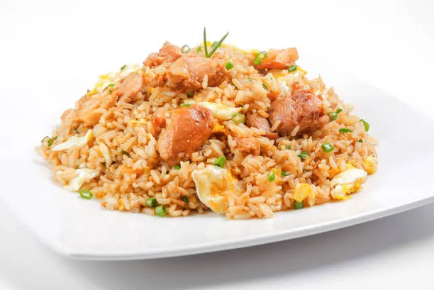

Ingredientes: Huevo, pollo, arroz, sala de soja, pimienta, sal(Aquí vamos a usar poca), Cebollita China.
Aquí vamos hacer arroz normal primero, mientras se hace el arroz vamos a picar el pollo en trozos normales. Luego le vas a echar encima la salsa de soja y lo mezclamos bien. Lo freímos con un poco de aceite y le hechas un poco de pimienta y un poquito de sal solo un poco. Una vez que este bien frito echamos el huevo(Aquí echa los que quieras). Lo mueves todo bien. Una vez que tengas todo lo vas poner en la olla del arroz o otro recipiente y lo mezclas todo. Cuando estés en el proceso de mezclar lo le vas echando la salsa de soja y lo vas moviendo hasta que coja ese color medio marrón. Lo pruebas y si vez que no tiene como un toque salado le hechas sal y lo mueves. Cuando hayas movido todo y haya cogido ese color marrón le hechas la cebollita china picada en círculos pequeños.